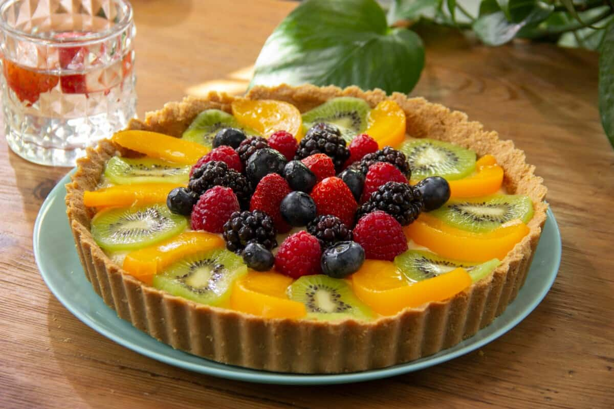

Recetario de Cocina Deliciosa

Tarta de Frutas
Categoría: Postres
Ingredientes:
- 1 base de masa quebrada
- Crema pastelera
- Frutas frescas al gusto (fresas, kiwi, plátano, etc.)
- Gelatina de brillo (opcional)
Instrucciones:
- Prehornear la base de masa quebrada durante 15 minutos a 180°C.
- Rellenar la base con la crema pastelera.
- Colocar las frutas frescas encima de la crema.
- Aplicar la gelatina de brillo para darle un acabado brillante.
- Dejar enfriar antes de servir.